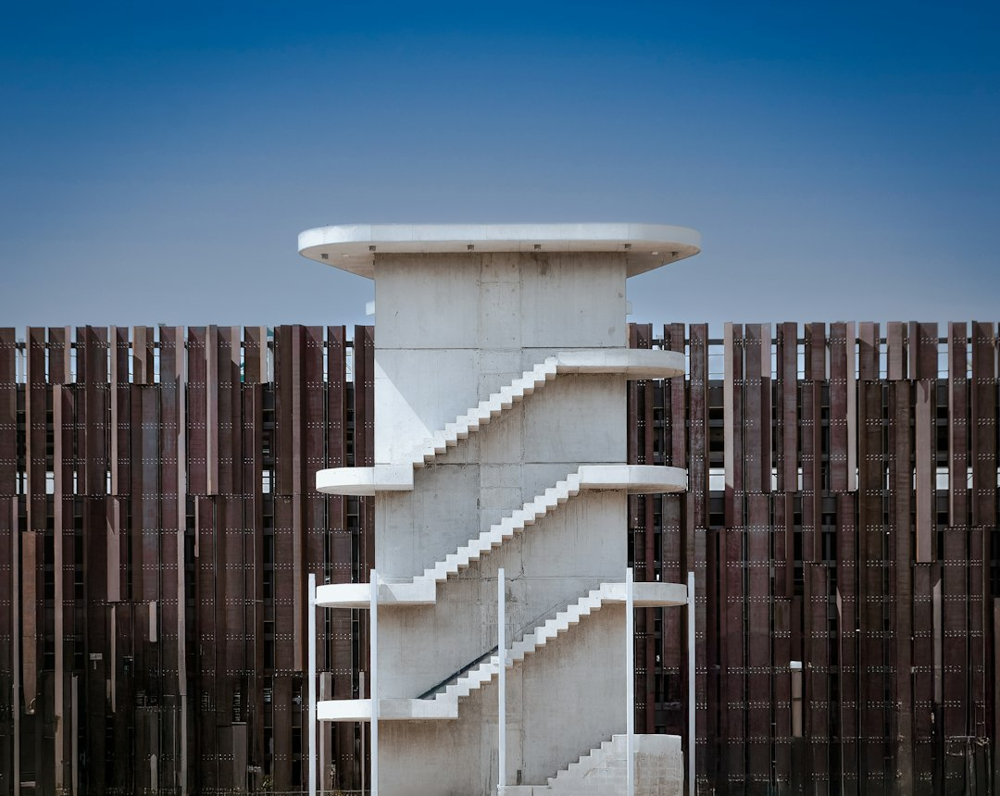

For Canberra homeowners comparing retaining wall services canberra options, the useful starting point is not the wall face, but the ground, water, access and approval path around it.
Retaining Wall Services Canberra Explained
Retaining Wall Canberra frames the work in a practical order: grade, water, load and access before choosing a wall system. That order suits Canberra blocks because the visible wall face rarely explains the whole level change. A short wall at one point may sit inside a larger cut and fill relationship, and that wider geometry affects how a provider reads the job.
Before asking for a quote, record the maximum retained height, then step back and photograph the full slope from both ends. Add close photographs of lean, cracking, decay, washout or persistent wetness only after the broader shape is captured. The point is to give the first inspection a shared map of the problem.
- Grade: note the highest retained point and the broader ground change.
- Loads: photograph nearby driveways, buildings, paving, fences or raised gardens.
- Water: show downpipes, overland flow, wet patches and likely outlet points.
- Access: describe the route from the street to the wall and any tight handling points.
How Canberra Site History Changes The Question
The source guide describes three recurring local shapes. Older inner-south gardens may have walls built around established slopes. Weston Creek, Belconnen and Tuggeranong blocks can involve house benches cut into hillsides. Gungahlin and Molonglo Valley sites may inherit levels from broader subdivision earthworks. Those patterns do not decide the answer, but they do change the first question.
For an older terrace, the enquiry may focus on whether the wall has reached the end of its service life or whether water and later landscaping have changed the load behind it. For a newer estate boundary, the question may be how the work relates to fixed levels, neighbouring ground and any documented site constraints. A good brief avoids guessing by describing the change rather than only naming the suburb.
For a second editorial view on the same topic, the related retaining walls in Canberra guide is useful when comparing common wall choices with site conditions.
Matching Wall Pathways To Site Facts
The published service list names concrete sleeper, segmental block and masonry, sandstone and natural stone, timber garden walls, gabion walls, drainage and excavation coordination, engineered approval-ready walls, and repairs or replacement. Treat those as pathways for discussion, not as a shopping list to pick from before the site is understood.
Concrete sleeper walls may suit straight or stepped residential work where embedment, transitions, loads, drainage and handling access can be designed together. Segmental block or masonry options need the wall geometry, footing or reinforced-soil requirements and available footprint to line up. Stone and gabion approaches depend on footprint, bearing, appearance and access. Timber garden walls belong in narrower conversations about appropriate lower terraces, moisture exposure, fixings, drainage and future replacement.
Repair and replacement work should begin with cause. Movement, decay, washout and cracking are symptoms, not the scope. Ask whether the written response explains the likely cause, the stabilisation or replacement path, and how water will be collected and discharged behind the new or repaired structure.
Approval And Qualified Roles
The source page keeps building approval and development approval separate. That is useful wording for an enquiry because a wall can be a construction problem, a planning problem, or both. The homeowner does not need to solve the approval pathway before talking to a provider, but the brief should ask how the project will be checked against each pathway.
Regulated work, certification and design should sit with appropriately qualified professionals. For retaining wall services canberra enquiries, that means the written scope should identify when engineering, certification or formal approval advice is part of the next step. A casual material suggestion is not enough when the wall is affected by significant loads, boundaries, nearby structures or unclear ground conditions.
- Ask which facts are needed before any approval view is reliable.
- Ask whether design, certification and construction responsibilities are separated in writing.
- Ask what information is still missing after the first inspection.
What A Useful Written Scope Should Include
A useful scope records the measured facts before the preferred product. It should describe the retained height, broader cut and fill, nearby loads, drainage path, boundary conditions and access route. It should also say whether the job is new work, replacement, stabilisation or repair after movement or washout.
Drainage deserves its own line item. The source guide names the collection zone, separator, subsoil drain, outlet, excavation access and spoil movement as parts of a workable wall scope. That language helps homeowners compare responses because it forces the quote to include what happens behind the wall, not only the visible face.
For retaining wall services canberra comparisons, keep every provider on the same brief. Send the same photographs, height notes and access description, then compare how each response treats water, loads, approvals and construction practicality. A lower-detail answer may still be early-stage, but it should clearly say what must be confirmed before the work can be priced or specified.
- Photograph the whole site. Take wide photos from both ends before close-ups so the wall is shown inside the full level change.
- Measure the highest retained point. Record the maximum retained height and note whether the ground keeps rising or falling beyond it.
- Map water movement. Show downpipes, wet areas, overland flow and any possible outlet before discussing wall materials.
- List nearby loads. Identify driveways, buildings, paving, fences and raised gardens that sit near or above the retained soil.
- Ask about approvals separately. Request a written view on building approval and development approval pathways rather than treating approval as one item.
| Scenario | What to record | Question to ask |
|---|---|---|
| Older garden wall | Lean, cracking, decay, washout, retained height and surrounding slope | Is this repair, stabilisation or full replacement, and what is the likely cause? |
| New or changed landscaping | Raised beds, paving, irrigation, downpipes and wet areas | Has the load or water path behind the wall changed? |
| Boundary or estate level issue | Neighbouring levels, fence line, access route and visible easements | Which approval checks and qualified roles are needed before design? |
| Material comparison | Footprint, access, finish preference and drainage path | Which wall systems are realistic for these site facts? |
This guide covers Canberra retaining wall planning, site facts, wall pathway comparison, drainage scope and approval questions.